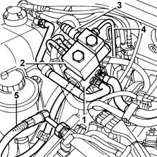
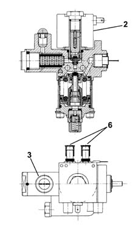

1044E gas pressure control device
- Path
- Descriptions > 10 ENGINE > 1044 FUEL CIRCUIT PUMP/AND DEVICES > 1044E gas pressure control device
- Kind
- system description
- Applies to
- all engines; all production periods; only with equipment: BIPOWER
- Interactive page
- https://sloeber94.github.io/elrnDB-fDbl/en/#/2582319
Applies to: all engines; all production periods; only with equipment: BIPOWER
CONSTRUCTION FEATURES
The pressure reduction unit is fitted in the engine compartment. This includes the actual single-stage pressure reduction unit (1) and a cut-off valve (2); it is also fitted with a methane pressure sensor (3).
The high pressure pipe (4) directs the methane from the cylinder to the pressure reduction unit inlet, whilst the low pressure pipe (5) is connected at the unit outlet.

Applies to: all engines; all production periods; only with equipment: BIPOWER
PRESSURE REDUCTION UNIT
The pressure reduction unit has the task of reducing the pressure of the methane from the value in the cylinder to the supply value for the methane injectors (9 ± 1 bar), in all engine operating conditions.
When the pressure in the cylinder goes below around 11 bar, the engine management control unit automatically switches from running on methane to petrol because a pressure of below 11 bar at the reduction unit intake would automatically lead to a pressure below 9 bar at the outlet which would not be sufficient for the smooth running of the engine.
Since the temperature of the methane decreases substantially as a result of its expansion due to the rise in pressure, the engine cooling circuit has a shunt (6) which allows the engine coolant to heat the pressure reduction unit to prevent any problems due to the increase in temperature.
